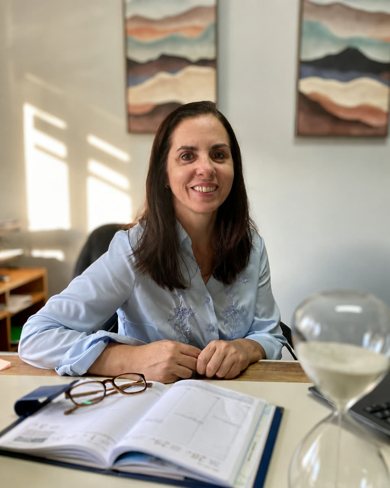
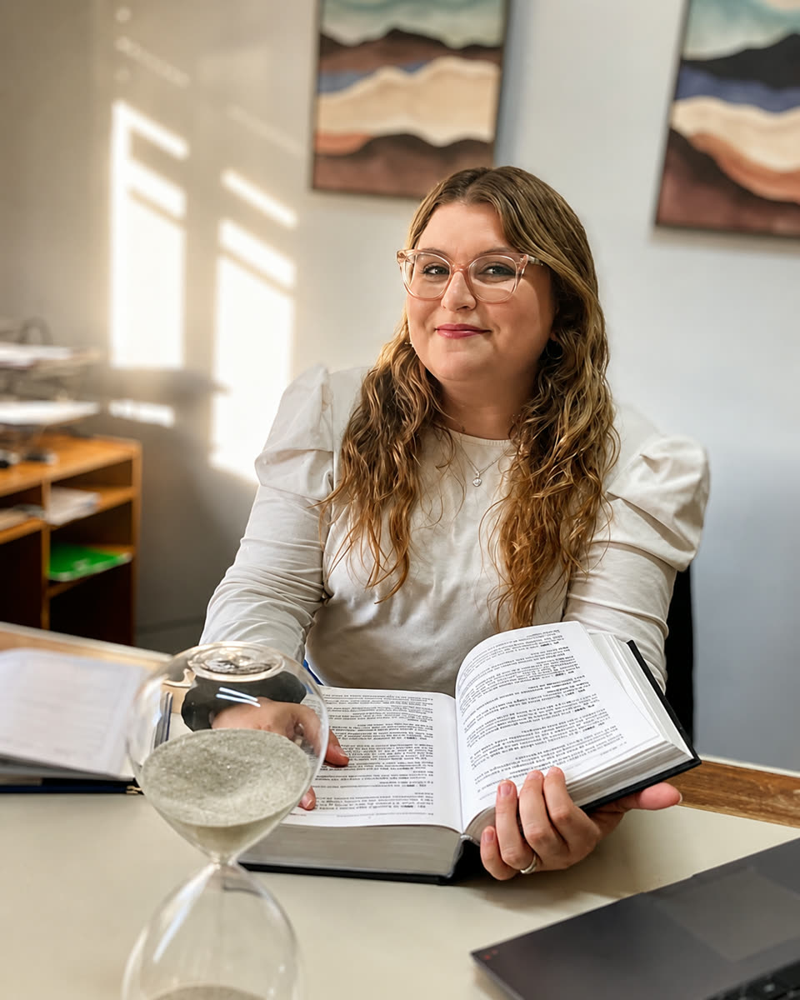
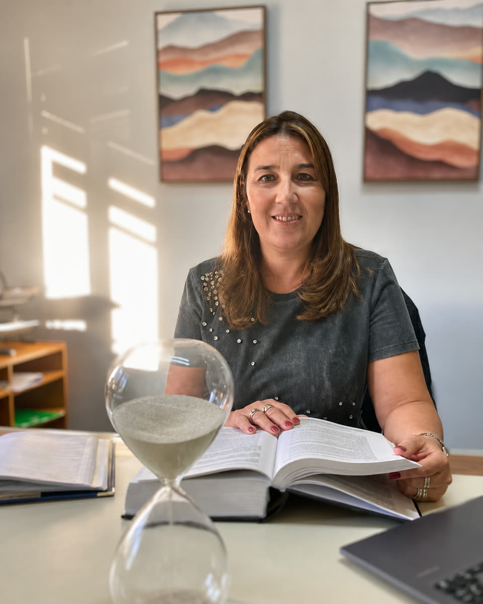
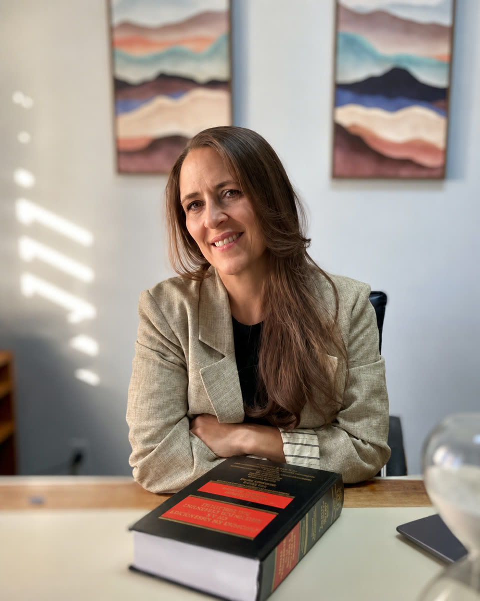

Estudio jurídico y notarial, con responsabilidad y cercanía.
Abogadas y escribanas en Maldonado que te escuchan, te explican con claridad y se ocupan de tu caso de principio a fin.
Cuando un trámite o una situación legal te preocupa
- No saber por dónde empezar ni qué documentación necesitás.
- El miedo a costos ocultos o a la falta de claridad en cada paso.
- La necesidad de rapidez, seguimiento y respuestas honestas.
Nuestro método
Escucha, análisis, estrategia y gestión.
Te explicamos las opciones con palabras claras, definimos el camino más conveniente y te acompañamos hasta el cierre del proceso.
Áreas frecuentes de trabajo
Trabajamos con foco en la claridad y la seguridad jurídica. Cada caso se analiza según su contexto particular.
Consultar por mi casoConsultas y asesoramiento legal
Analizamos tu situación y te damos recomendaciones claras antes de actuar.
Diagnóstico honestoOpciones explicadasPróximos pasos definidosRedacción y revisión de documentos
Contratos, acuerdos y documentación redactados o revisados con criterio jurídico.
Lenguaje claroCláusulas segurasRevisión de riesgosGestiones y trámites
Te acompañamos en gestiones administrativas y trámites con seguimiento real.
Plazos cuidadosReporte periódicoCoordinación integralRepresentación en procesos
Defendemos tus intereses con dedicación y comunicación constante.
Estrategia personalizadaTrato humanoInformación en cada etapa
Nos especializamos en
Asesoría Notarial
Te orientamos con claridad, documentación completa y seguimiento de cada etapa del trámite.
Bienes raíces
Gestiones notariales en operaciones inmobiliarias.
Escrituraciones
Redacción y otorgamiento de escrituras con seguimiento completo.
Cartas poder
Otorgamiento y asesoramiento para poderes según tu necesidad.
Certificaciones notariales
Certificación de firmas, copias y documentación.
Sucesiones
Acompañamiento notarial en trámites sucesorios.
Actas y notificaciones
Actas de constatación y notificaciones notariales.
Personerías jurídicas
Constitución y modificación de entidades.
Fideicomisos
Asesoramiento y documentación para fideicomisos.
Inscripción RUPE
Orientación y gestión para la inscripción en RUPE.
La información brindada es general y no sustituye asesoramiento notarial personalizado.
Un proceso claro, sin sorpresas
Comunicación transparente y responsable en cada paso, desde el primer mensaje hasta la entrega final.
Agendar consulta- 01
Primer contacto
WhatsApp, llamada o formulario. Te respondemos con claridad.
- 02
Revisión inicial
Analizamos tu situación y te pedimos la documentación necesaria.
- 03
Opciones y pasos
Te explicamos las alternativas con palabras simples.
- 04
Gestión y seguimiento
Llevamos adelante el trabajo con reportes en cada etapa.
- 05
Cierre y entrega
Documentación completa, dudas resueltas y trato cercano.
Profesionalismo y cercanía, con nombre y cara
Un equipo de abogadas y escribanas con experiencia, compromiso y atención cercana.

Alexandra Trujillo
Abogada | Derecho Laboral, Penal y Administrativo
Egresada de la Universidad de la República en 2006. Brinda asesoramiento en materia laboral, penal y administrativa, con una mirada comprometida y actualizada.

Paula Ancheta Bertoche
Abogada | Derecho Penal y Familia Especializada
Egresada de la Universidad de la República en 2019. Trabaja en Derecho Penal, familia especializada, violencia doméstica y derechos humanos.

Gabriela Sanguinet Rodríguez
Abogada y Escribana
Egresada de la Universidad de la República en 2007. Se especializa en asesoramiento jurídico-notarial, compraventas, sucesiones y certificaciones.

Ximena González Sanguinetti
Abogada | Derecho del Trabajo y Seguridad Social
Doctora en Derecho y Ciencias Sociales, egresada de la Universidad de la República en 2003. Su trayectoria se centra en Derecho del Trabajo y Seguridad Social.
Más de 125 reseñas, 5.0 estrellas.
Servicio y total confianza
Tuvimos el contacto de Gabriela Sanguinet casi por casualidad, y desde entonces le confiamos todo sin dudar un segundo. Es una profesional con un gran sentido común, humilde, que domina a la perfección los trámites y los entresijos de la administración uruguaya. Además, es razonable en sus honorarios, rápida y eficiente. ¿Qué más se puede pedir? Totalmente recomendable.
Excelente experiencia
Quiero felicitar calurosamente al estudio Trujillo por su profesionalismo ejemplar. El equipo demuestra una gran experiencia y una disponibilidad notable. Aprecié particularmente su enfoque humano: siempre amables, sonrientes y positivas, saben crear un clima de confianza muy tranquilizador. Agradezco especialmente a Gabriela Sanguinet por su acompañamiento durante nuestra instalación en Uruguay. Recomiendo ampliamente sus servicios, particularmente a los expatriados.
Muy profesional y comprometida
Excelente abogada, muy profesional y comprometida con su trabajo. Me ayudó durante todo mi proceso judicial y obtuvimos un gran resultado. Siempre estuvo disponible para aclarar mis dudas y me hizo sentir acompañado en todo momento. La recomiendo 100%.
Atención clara y eficiente
Necesitaba una escribana con urgencia por la compra de un vehículo y me recomendaron a Gabriela Sanguinet del Estudio Trujillo. Quedé súper conforme con la atención: muy profesional, clara y eficiente. Me solucionó todo enseguida. Totalmente recomendable ella y todo el equipo. También destaco a la abogada Paula Ancheta, a quien conozco y recomiendo.
Compromiso y claridad
Excelente profesional. Me acompañó con compromiso y claridad durante todo el proceso legal tras mi accidente en moto. Siempre fue responsable, atenta y eficiente. Totalmente recomendable por su ética y dedicación.
Una lucha que ganamos juntas
Tenía una situación complicada: me despidieron en post parto y no me querían pagar. La abogada me ayudó muchísimo. Fue una lucha de casi 2 años, pero en todo momento se encargó de la situación buscando lo mejor para mi caso. Le estaré siempre agradecida. Siempre recomendable.
Siempre responden tus dudas
Su servicio es excelente, muy responsable y dedicado al trabajo de abogadas y escribana. Fundamentalmente, siempre te responden todas tus dudas. Trujillo 100% al obrero.
Resolvemos tus dudas antes de empezar
Si tu pregunta no está acá, escribinos y te respondemos.
Hacer una consultaTu confianza, nuestro compromiso.
Contanos tu situación y te orientamos con claridad. Información honesta, seguimiento y trato humano en cada paso.
Estamos a un mensaje de distancia
Elegí el canal que prefieras. Te respondemos con claridad y a la brevedad.
Maldonado, Uruguay · Plus Code 32QV+WX